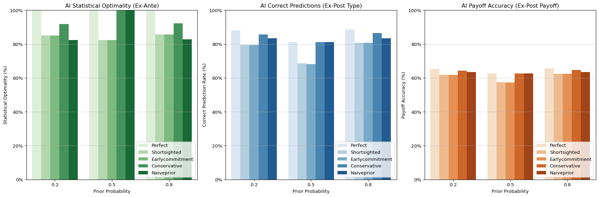
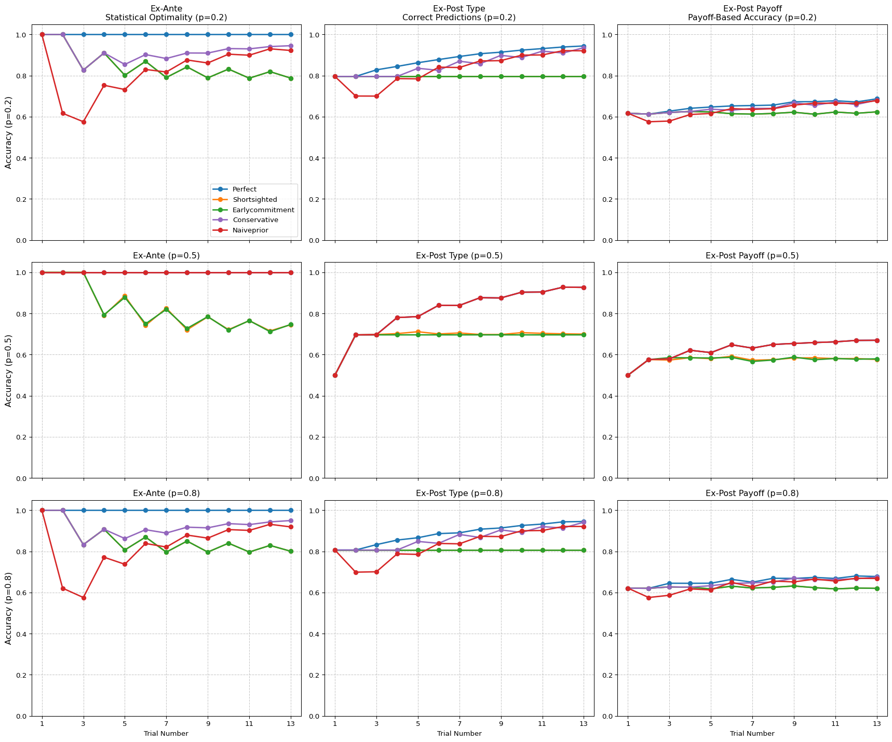
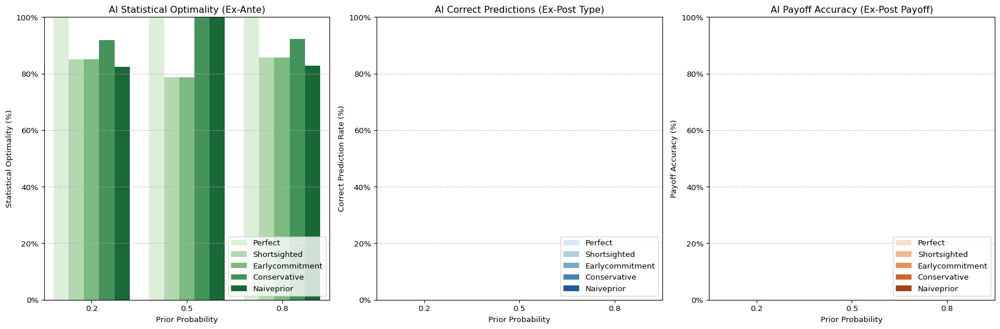
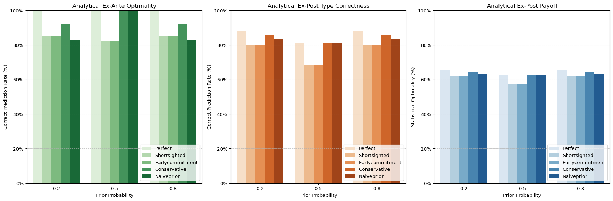

# Setup and Parameters
import numpy as np
import pandas as pd
import matplotlib.pyplot as plt
import seaborn as sns
import itertools
from dataclasses import dataclass
from typing import List, Dict, Tuple, Any, Optional
# Set random seed for reproducibility
np.random.seed(20250410)
## Configuration dataclass for global parameters
@dataclass(frozen=True)
class SimulationConfig:
p: List[float] # Prior probabilities of good share
q: float # Probability of high payoff for good share
high_payoff: float # Y value - high payoff amount
low_payoff: float # Z value - low payoff amount
bond_payoff: float # X value - safe bond payoff amount
num_trials: int # Trials per block
num_simulations: int # Number of simulations to run
ai_types: List[str] # Types of AI to simulate
beta: float # Conservatism parameter
# Create default configuration
DEFAULT_CONFIG = SimulationConfig(
p=[0.2, 0.5, 0.8],
q=0.7,
high_payoff=5,
low_payoff=1,
bond_payoff=3,
num_trials=13,
num_simulations=10000,
ai_types=['perfect', 'shortsighted', 'earlycommitment', 'conservative', 'naiveprior'],
beta=0.5
)Core Functions
Investment Algorithm Accuracy Simulation
This notebook simulates the accuracy of different investment algorithms in an uncertain environment. It compares the performance of four different AI models against a benchmark of perfect knowledge. The simulation involves a simple investment task where an agent must decide between investing in a risky asset (a share) or a safe asset (a bond) over multiple trials.
Setup and Parameters
This section sets up the necessary libraries and parameters for the simulation.
- It imports libraries like NumPy, Pandas, Matplotlib, Seaborn, and tqdm.
- It sets a random seed for reproducibility.
- It defines key parameters such as the prior probabilities of a good share (
p), the probability of a high payoff for a good share (q), the payoff values for high and low outcomes (high_payoff,low_payoff), the bond payoff (bond_payoff), the number of trials per block (num_trials), and the number of simulations to run (num_simulations).
This section defines the core functions for the investment task simulation and analytical solution:
simulate_outcomes: Simulates the outcomes (high or low) for a given share type (good or bad) over a specified number of trials. It uses theqprobability to determine the likelihood of each outcome.calculate_expected_return: Calculates the expected return for the risky asset (share) based on the posterior probability of it being good. This is used to make informed investment decisions.get_correct_decision: Determines the optimal investment decision (share or bond) given the true share type. This represents perfect knowledge and serves as a benchmark for evaluating the AI models.calculate_posterior: Calculates the posterior probability based on the AI type and available information:- For ‘perfect’: Uses Bayes’ rule with all available data, representing the ideal scenario with perfect knowledge and reasoning.
- For ‘shortsighted’: Calculates the posterior based only on the most recent outcome, representing an AI with limited memory or focus.
- For ‘earlycommitment’: Calculates the posterior based solely on the first outcome, representing an AI that makes an early judgment and sticks to it.
- For ‘conservative’: Calculates the posterior using a conservative approach, where it updates insufficiently based on the outcomes.
- For ‘naiveprior’: Calculates the posterior using all data but assumes a fixed 50/50 prior, representing an AI with an inaccurate understanding of the prior probabilities.
- the
get_ai_recommendationfunction, which determines the AI’s investment recommendation (share, bond, or indifferent) based on the AI type and the available information.- It takes the AI type, prior probability, outcomes so far, and the current trial number as input.
- It calculates the posterior probability using the appropriate AI type.
- It calculates the expected return based on the posterior.
- It compares the expected return to the bond payoff and makes a recommendation accordingly.
# Investment Task Simulation Functions
def simulate_outcomes(share_type: str, config: SimulationConfig) -> List[str]:
"""
Simulate high/low outcomes for a given share type
Parameters:
share_type: 'good' or 'bad' - the actual quality of the share
config: Simulation configuration parameters
Returns:
Array of 'high' or 'low' outcomes for each trial
"""
if share_type == 'good':
outcomes = np.random.choice(['high', 'low'], size=config.num_trials, p=[config.q, 1-config.q])
return outcomes.tolist() # Convert to list
else: # share_type == 'bad'
outcomes = np.random.choice(['high', 'low'], size=config.num_trials, p=[1-config.q, config.q])
return outcomes.tolist() # Convert to list
def calculate_expected_return(posterior_good: float, config: SimulationConfig) -> float:
"""
Calculate expected return for the risky asset based on posterior probability
Parameters:
posterior_good: probability that the share is good
config: Simulation configuration parameters
Returns:
Expected monetary return of investing in the share
"""
posterior_bad = 1 - posterior_good
# Calculate expected return using equation from the experiment design
return (posterior_good * config.q * config.high_payoff +
posterior_bad * (1-config.q) * config.high_payoff +
posterior_good * (1-config.q) * config.low_payoff +
posterior_bad * config.q * config.low_payoff)
def get_correct_decision(true_share_type: str, config: SimulationConfig) -> str:
"""
Determine the correct investment decision given the true share type
Parameters:
true_share_type: 'good' or 'bad' - the actual quality of the share
config: Simulation configuration parameters
Returns:
'share' or 'bond' or 'indifferent' - the optimal investment choice
"""
# If we know the true share type, posterior probability is either 0 or 1
p_good = 1 if true_share_type == 'good' else 0
expected_return = calculate_expected_return(p_good, config)
if expected_return > config.bond_payoff:
return 'share'
elif expected_return < config.bond_payoff:
return 'bond'
else:
return 'indifferent'# Bayesian Posterior Calculation Function
def calculate_posterior(ai_type: str, p: float, outcomes: List[str], current_trial: int, config: SimulationConfig) -> float:
"""
Calculate posterior probability based on AI type and available information
Parameters:
ai_type: 'perfect', 'shortsighted', 'earlycommitment', 'conservative' or 'naiveprior'
p: prior probability of good share
outcomes: list of all outcomes so far
current_trial: the current trial number (0-indexed)
config: Simulation configuration parameters
Returns:
Updated probability that the share is good
"""
if not outcomes:
return p # No evidence yet, return the prior
# Handle different AI types
if ai_type == 'shortsighted':
# Short-sighted AI only considers the most recent outcome
outcomes = [outcomes[-1]]
elif ai_type == 'earlycommitment':
# Early commitment AI only uses the first outcome
outcomes = [outcomes[0]]
elif ai_type == 'naiveprior':
# Naïve prior AI uses all data but always assumes a 50/50 prior
p = 0.5
# Count high and low outcomes
nH = sum(1 for o in outcomes if o == 'high')
nL = len(outcomes) - nH
# Calculate posterior using Bayes' rule
if ai_type == 'conservative':
# Conservative AI updates insufficiently
numerator = p * ((config.q ** nH) * ((1-config.q) ** nL)) ** config.beta
denominator = numerator + (1-p) * (((1-config.q) ** nH) * (config.q ** nL)) ** config.beta
else:
# Standard Bayesian update for other AI types
numerator = p * (config.q ** nH) * ((1-config.q) ** nL)
denominator = numerator + (1-p) * ((1-config.q) ** nH) * (config.q ** nL)
return numerator / denominator if denominator != 0 else p# AI Decision Function
def get_ai_recommendation(ai_type: str, p: float, outcomes: List[str], current_trial: int, config: SimulationConfig) -> str:
"""
Determine AI's recommendation based on AI type and available information
Parameters:
ai_type: AI model type
p: prior probability of good share
outcomes: list of all outcomes so far
current_trial: the current trial number (0-indexed)
config: Simulation configuration parameters
Returns:
'share', 'bond', or 'indifferent' - the AI's recommendation
"""
# Calculate posterior probability based on AI type
posterior_good = calculate_posterior(ai_type, p, outcomes, current_trial, config)
# Calculate expected return and make recommendation
expected_return = calculate_expected_return(posterior_good, config)
if expected_return > config.bond_payoff:
return 'share'
elif expected_return < config.bond_payoff:
return 'bond'
else:
return 'indifferent'Metric calculation functions
It calculates exact probabilities for all possible outcome sequences rather than using simulation.
Ex-Ante correctness: Evaluates if the AI’s recommendation matches the optimal decision based on perfect Bayesian reasoning given available information. It measures statistical optimality regardless of outcome.
Ex-Post Type correctness: Evaluates if the AI’s recommendation matches what would have been optimal given perfect knowledge of the share type (good vs bad). This measures alignment with the true underlying asset quality.
Ex-Post Payoff correctness: Evaluates if the AI’s recommendation maximized payoff given the actual outcome (high vs low). This measures whether the decision was rewarded by the specific outcome that occurred.
##########################
# Three correctness measures
##########################
def measure_ex_ante_correctness(ai_rec: str, true_bayes_post: float, config: SimulationConfig) -> float:
"""
1) Ex-Ante correctness = does the AI's action match the *fully* Bayesian (perfect) EV?
- If EV(share) > bond => share is correct
- If EV(share) < bond => bond is correct
- If tie => all are correct
"""
ev_share_correct = calculate_expected_return(true_bayes_post, config)
if abs(ev_share_correct - config.bond_payoff) < 1e-15:
# Perfect tie => full credit for any rec
return 1.0
elif ev_share_correct > config.bond_payoff:
return 1.0 if ai_rec == 'share' else 0.0
else:
return 1.0 if ai_rec == 'bond' else 0.0
def measure_ex_post_share_type(ai_rec: str, share_type: str) -> float:
"""
2) Old Ex-post measure (share-type):
- If share is good => share=1, bond=0, indifferent=0.5
- If share is bad => bond=1, share=0, indifferent=0.5
"""
if share_type == 'good':
if ai_rec == 'share':
return 1.0
elif ai_rec == 'indifferent':
return 0.5
else: # bond
return 0.0
else: # bad
if ai_rec == 'bond':
return 1.0
elif ai_rec == 'indifferent':
return 0.5
else: # share
return 0.0
def measure_ex_post_payoff(ai_rec: str, outcome: str) -> float:
"""
3) Payoff-based ex-post:
If outcome='high' => share=1, bond=0, indifferent=0.5
If outcome='low' => bond=1, share=0, indifferent=0.5
"""
if outcome == 'high':
if ai_rec == 'share':
return 1.0
elif ai_rec == 'bond':
return 0.0
else: # indifferent
return 0.5
else: # 'low'
if ai_rec == 'bond':
return 1.0
elif ai_rec == 'share':
return 0.0
else:
return 0.5
def calculate_accuracy_metrics(ai_rec: str, true_posterior: float, true_share_type: str,
outcome: str, ev_optimal: str) -> Dict[str, float]:
"""
Calculate all three accuracy metrics for an AI recommendation
Parameters:
ai_rec: AI recommendation ('share', 'bond', or 'indifferent')
true_posterior: True Bayesian posterior probability of good share
true_share_type: Actual share type ('good' or 'bad')
outcome: Actual outcome ('high' or 'low')
ev_optimal: Statistically optimal decision ('share', 'bond', or 'indifferent')
Returns:
Dictionary containing all three accuracy metrics
"""
# 1. Ex-ante accuracy (statistical optimality)
ex_ante = measure_ex_ante_correctness(ai_rec, true_posterior, DEFAULT_CONFIG)
# 2. Ex-post type accuracy (share-type correctness)
ex_post_type = measure_ex_post_share_type(ai_rec, true_share_type)
# 3. Ex-post payoff accuracy (outcome-based)
ex_post_payoff = measure_ex_post_payoff(ai_rec, outcome)
return {
'ex_ante': ex_ante,
'ex_post_type': ex_post_type,
'ex_post_payoff': ex_post_payoff
}
# Correctness measures excluding when equal EV
def measure_ex_ante_forced_choice(ai_rec: str, true_bayes_post: float, config: SimulationConfig) -> Tuple[float, bool]:
"""
Ex-Ante correctness excluding EV ties
Parameters:
ai_rec: AI recommendation
true_bayes_post: True Bayesian posterior
config: Simulation configuration
Returns:
Tuple of (accuracy, should_include)
"""
ev_share = calculate_expected_return(true_bayes_post, config)
# Check if it's a tie (EV equal to bond payoff)
is_tie = abs(ev_share - config.bond_payoff) < 1e-15
# If this is a tie, exclude this case
if is_tie:
return 0.0, False
# Otherwise, standard scoring
if ev_share > config.bond_payoff:
accuracy = 1.0 if ai_rec == 'share' else 0.0
else: # ev_share < config.bond_payoff
accuracy = 1.0 if ai_rec == 'bond' else 0.0
return accuracy, TrueSimulation analysis
This section defines functions for running the simulations and aggregating the results:
run_simulation: Runs a single simulation of the investment task for a given prior probability (p). It simulates outcomes, calculates the correct decision, tracks the AI recommendations, and calculates accuracy metrics.run_all_simulations: Runs simulations for all prior probabilities (p) and aggregates the results across multiple simulations.
# Simulation Runner Functions
def run_simulation(p: float, sim_id: int, config: SimulationConfig) -> Tuple[Dict[str, Dict[str, float]], List[Dict]]:
"""
Run a single simulation of the investment task
Parameters:
p: Prior probability of good share
sim_id: Simulation ID
config: Simulation configuration parameters
Returns:
Tuple containing:
- Dictionary of AI performance metrics
- List of detailed trial data
"""
# Determine if the share is good or bad based on prior probability
share_type = 'good' if np.random.random() < p else 'bad'
# Simulate outcomes for all trials
outcomes = simulate_outcomes(share_type, config)
# Get the correct decision based on the true share type
correct_decision = get_correct_decision(share_type, config)
# Track recommendations and metrics for each AI type
ai_metrics = {ai_type: {
'ex_ante': 0,
'ex_post_type': 0,
'ex_post_payoff': 0,
'forced_correct': 0,
'forced_total': 0
} for ai_type in config.ai_types}
detailed_data = []
# Simulate AI recommendations at each trial
for trial in range(1, config.num_trials + 1):
# Get outcomes observed so far (excluding current trial)
observed_outcomes = outcomes[:trial-1]
current_outcome = outcomes[trial-1]
# Get true Bayesian posterior for EV measure
true_posterior = calculate_posterior('perfect', p, observed_outcomes, trial-1, config)
# Calculate expected return based on true posterior
expected_return = calculate_expected_return(true_posterior, config)
# Determine optimal decision based on expected return
if expected_return > config.bond_payoff:
ev_optimal_decision = 'share'
elif expected_return < config.bond_payoff:
ev_optimal_decision = 'bond'
else:
ev_optimal_decision = 'indifferent'
# For each AI type, get recommendation and measure correctness
for ai_type in config.ai_types:
ai_rec = get_ai_recommendation(ai_type, p, observed_outcomes, trial-1, config)
# Ex-Ante correctness (match with statistical optimality)
ex_ante_correct = measure_ex_ante_correctness(ai_rec, true_posterior, config)
# Ex-Post Type correctness (match with true share type)
ex_post_type_correct = measure_ex_post_share_type(ai_rec, share_type)
# Ex-Post Payoff correctness (match with actual outcome)
ex_post_payoff_correct = measure_ex_post_payoff(ai_rec, current_outcome)
# Forced choice Ex-Ante correctness (excluding ties)
forced_correct, should_include = measure_ex_ante_forced_choice(ai_rec, true_posterior, config)
# Add to metrics
ai_metrics[ai_type]['ex_ante'] += ex_ante_correct
ai_metrics[ai_type]['ex_post_type'] += ex_post_type_correct
ai_metrics[ai_type]['ex_post_payoff'] += ex_post_payoff_correct
# Only include in forced choice metric if it's not a tie
if should_include:
ai_metrics[ai_type]['forced_correct'] += forced_correct
ai_metrics[ai_type]['forced_total'] += 1
# Record detailed data for this trial
detailed_data.append({
'sim_id': sim_id,
'prior': p,
'trial': trial,
'ai_type': ai_type,
'true_share_type': share_type,
'outcome': current_outcome,
'ai_rec': ai_rec,
'ev_optimal': ev_optimal_decision,
'ev_accuracy': ex_ante_correct,
'rec_accuracy': ex_post_type_correct,
'outcome_accuracy': ex_post_payoff_correct,
'forced_accuracy': forced_correct if should_include else None,
'is_ev_tie': not should_include
})
# Convert trial sums to averages
for ai_type in config.ai_types:
for metric in ['ex_ante', 'ex_post_type', 'ex_post_payoff']:
ai_metrics[ai_type][metric] /= config.num_trials
return ai_metrics, detailed_data
def run_all_simulations(config: SimulationConfig, num_simulations_to_run: Optional[int] = None) -> Tuple[Dict[float, Dict[str, Dict[str, float]]], Dict[float, Dict[str, Dict[str, float]]], pd.DataFrame]:
"""
Run simulations for all prior probabilities
Parameters:
config: Simulation configuration parameters
num_simulations_to_run: Optional override for number of simulations
Returns:
Tuple with:
- Standard results dictionary
- Forced choice results dictionary
- DataFrame with detailed trial data
"""
if num_simulations_to_run is None:
num_simulations_to_run = config.num_simulations
standard_results = {}
forced_results = {}
all_detailed_data = []
for p in config.p:
# Initialize accumulators for this prior
sums = {ai_type: {
'ex_ante': 0.0,
'ex_post_type': 0.0,
'ex_post_payoff': 0.0,
'forced_correct': 0.0,
'forced_total': 0.0
} for ai_type in config.ai_types}
# Run simulations for this prior probability
for sim_id in range(num_simulations_to_run):
sim_results, detailed_data = run_simulation(p, sim_id, config)
# Collect detailed data
all_detailed_data.extend(detailed_data)
# Aggregate results
for ai_type in config.ai_types:
for metric in sums[ai_type]:
sums[ai_type][metric] += sim_results[ai_type][metric]
# Process standard results
standard_results[p] = {}
for ai_type in config.ai_types:
standard_results[p][ai_type] = {
'ex_ante': sums[ai_type]['ex_ante'] / num_simulations_to_run,
'ex_post_type': sums[ai_type]['ex_post_type'] / num_simulations_to_run,
'ex_post_payoff': sums[ai_type]['ex_post_payoff'] / num_simulations_to_run
}
# Process forced choice results separately
forced_results[p] = {}
for ai_type in config.ai_types:
total_forced = sums[ai_type]['forced_total']
if total_forced > 0:
accuracy = sums[ai_type]['forced_correct'] / total_forced
pct_included = total_forced / (num_simulations_to_run * config.num_trials) * 100
else:
accuracy = float('nan')
pct_included = 0
# Format exactly like standard_results to work with existing plot function
forced_results[p][ai_type] = {
'ex_ante': accuracy,
'ex_post_type': float('nan'), # Not applicable
'ex_post_payoff': float('nan'), # Not applicable
'pct_included': pct_included
}
# Convert detailed data to DataFrame
trial_df = pd.DataFrame(all_detailed_data)
return standard_results, forced_results, trial_dfAnalytical solution
This section provides the functions for the analytical solution. It comprises the following functions:
seq_probability: Calculates the probability of a specific sequence of outcomes given the share type (good or bad) and the prior probability.run_all_measures: Runs the analytical solution for all measures (ex-ante, ex-post type, and ex-post payoff) across all prior probabilities and outcomes.
##########################
# Probability of a sequence
##########################
def seq_probability(sequence: np.ndarray, share_type: str, config: SimulationConfig) -> float:
"""
Probability of seeing 'sequence' if the share is good or bad.
Parameters:
sequence: Array of 'high' or 'low' outcomes
share_type: 'good' or 'bad'
config: Simulation configuration parameters
Returns:
Probability of the sequence occurring
"""
# Convert sequence to binary array (1 for high, 0 for low)
if isinstance(sequence, np.ndarray):
# If already numpy array, use it directly
seq_arr = sequence
else:
# Convert list of strings to binary array
seq_arr = np.array([1 if o == 'high' else 0 for o in sequence])
# Count high outcomes
nH = np.sum(seq_arr)
# Count low outcomes
nL = len(seq_arr) - nH
if share_type == 'good':
return (config.q ** nH) * ((1.0 - config.q) ** nL)
else:
return ((1.0 - config.q) ** nH) * (config.q ** nL)
##########################
# Main enumeration function
##########################
def run_all_measures(config: SimulationConfig) -> Dict[float, Dict[str, Dict[str, float]]]:
"""
Enumerates all 2^num_trials sequences, simulates each AI's picks,
and calculates three measures of accuracy using NumPy for vectorization.
Parameters:
config: Simulation configuration parameters
Returns:
Nested dictionary with results for each prior and AI type
"""
# Pre-generate all possible sequences as binary arrays (0=low, 1=high)
# This gives us a 2D array where each row is one possible sequence
sequences = np.array(list(itertools.product([0, 1], repeat=config.num_trials)))
# Results dictionary
results = {}
# For each prior probability
for p in config.p:
print(f"Calculating analytical solution for p={p}")
# Pre-calculate probabilities for all sequences
# Probability of sequence if share is good
probs_good = np.zeros(len(sequences))
# Probability of sequence if share is bad
probs_bad = np.zeros(len(sequences))
# Pre-convert sequences to string representations for processing
seq_strings = []
for seq in sequences:
# Convert binary (0,1) to ('low','high')
seq_str = ['high' if bit == 1 else 'low' for bit in seq]
seq_strings.append(seq_str)
# Calculate probabilities for this sequence
prob_good = seq_probability(seq, 'good', config)
prob_bad = seq_probability(seq, 'bad', config)
# Store in arrays
probs_good[len(seq_strings)-1] = prob_good
probs_bad[len(seq_strings)-1] = prob_bad
# Initialize measures for each AI type
measure_sums = {
ai_type: {
'ex_ante': 0.0,
'ex_post_type': 0.0,
'ex_post_payoff': 0.0
}
for ai_type in config.ai_types
}
# For each possible sequence
for i, (seq, seq_str) in enumerate(zip(sequences, seq_strings)):
# Probability weights
prob_good = probs_good[i]
prob_bad = probs_bad[i]
seq_weight = p * prob_good + (1.0 - p) * prob_bad
# Skip sequences with near-zero probability to save computation
if seq_weight < 1e-10:
continue
# For each AI type
for ai_type in config.ai_types:
# Tracking correctness measures
correct_ex_ante = 0.0
correct_ex_post_good = 0.0
correct_ex_post_bad = 0.0
correct_ex_post_payoff = 0.0
# Simulate the AI observing outcomes one by one
observed = []
for t, outcome in enumerate(seq_str):
# Get AI recommendation based on observations so far
current_trial = len(observed)
ai_rec = get_ai_recommendation(ai_type, p, observed, current_trial, config)
# Calculate true Bayesian posterior for EV measure
true_posterior_good = calculate_posterior('perfect', p, observed, current_trial, config)
# 1) Ex-Ante correctness
correct_ex_ante += measure_ex_ante_correctness(ai_rec, true_posterior_good, config)
# 2) Ex-Post (share-type) correctness
correct_ex_post_good += measure_ex_post_share_type(ai_rec, 'good')
correct_ex_post_bad += measure_ex_post_share_type(ai_rec, 'bad')
# 3) Ex-Post (payoff-based) correctness
correct_ex_post_payoff += measure_ex_post_payoff(ai_rec, outcome)
# Update observed outcomes for next trial
observed.append(outcome)
# Update measure sums with sequence-weighted correctness
measure_sums[ai_type]['ex_ante'] += correct_ex_ante * seq_weight
measure_sums[ai_type]['ex_post_type'] += (
correct_ex_post_good * (p * prob_good) +
correct_ex_post_bad * ((1.0 - p) * prob_bad)
)
measure_sums[ai_type]['ex_post_payoff'] += correct_ex_post_payoff * seq_weight
# Process results for this prior probability
final_for_p = {}
for ai_type in config.ai_types:
# Convert sums to fractions by dividing by number of trials
final_for_p[ai_type] = {
'ex_ante': measure_sums[ai_type]['ex_ante'] / float(config.num_trials),
'ex_post_type': measure_sums[ai_type]['ex_post_type'] / float(config.num_trials),
'ex_post_payoff': measure_sums[ai_type]['ex_post_payoff'] / float(config.num_trials)
}
results[p] = final_for_p
return resultsVisualisation and reporting functions
This section defines functions for creating summary visualisations of the results:
create_performance_summary: Creates a bar chart comparing the overall performance of all AI models using both traditional and EV-based accuracy measures.plot_performance_by_prior: Creates bar charts showing the performance of AI models across different prior probabilities, using both traditional and EV-based accuracy measures.create_dynamic_x_ticks: Helper for dynamic x-ticks in plots.plot_accuracy_by_trial: Creates a plot visualizing the accuracy of AI models across trials for different prior probabilities.plot_combined_accuracy_by_trial: Creates a combined plot visualizing the accuracy of AI models across trials for different prior probabilities.plot_analytical_performance_by_prior: Creates a plot visualizing the analytical performance of AI models across different prior probabilities.create_table_from_resultstakes the results dictionaries (containing accuracy data) and atable_typeparameter to create formatted tables summarizing the AI models’ performance. It takes three parameters and creates either a summary table (overall AI performance) or a prior probability table (performance for each prior).results: A dictionary containing the traditional accuracy results from the simulations.ev_results: A dictionary containing the expected value (EV)-based accuracy results from the simulations.table_type: A string indicating the type of table to generate (“summary” or “prior”).
plot_trial_by_trial_performance: Creates a plot visualizing the traditional accuracy of AI models across trials for different prior probabilities.
# Visualisation Functions
def create_performance_summary(results: Dict[float, Dict[str, Dict[str, float]]], config: SimulationConfig) -> plt.Figure:
"""
Create a clear performance summary chart comparing all AI models
Parameters:
results: Dictionary with accuracy results in consistent format
config: Simulation configuration parameters
Returns:
matplotlib figure
"""
# Calculate average accuracy across all priors for all measures
ex_ante_accuracy = {} # EV-based
ex_post_type_accuracy = {} # Traditional
ex_post_payoff_accuracy = {} # Payoff-based
for ai_type in config.ai_types:
# Calculate average accuracy across all priors
ex_ante_sum = sum(results[p][ai_type]['ex_ante'] for p in config.p)
ex_post_type_sum = sum(results[p][ai_type]['ex_post_type'] for p in config.p)
ex_post_payoff_sum = sum(results[p][ai_type]['ex_post_payoff'] for p in config.p)
# Average across priors
ex_ante_accuracy[ai_type] = ex_ante_sum / len(config.p)
ex_post_type_accuracy[ai_type] = ex_post_type_sum / len(config.p)
ex_post_payoff_accuracy[ai_type] = ex_post_payoff_sum / len(config.p)
# Create DataFrame for plotting
summary_data = []
for ai_type in config.ai_types:
summary_data.append({
'AI Type': ai_type.capitalize(),
'Accuracy Measure': 'Ex-Ante',
'Accuracy': ex_ante_accuracy[ai_type]
})
summary_data.append({
'AI Type': ai_type.capitalize(),
'Accuracy Measure': 'Ex-Post Type',
'Accuracy': ex_post_type_accuracy[ai_type]
})
summary_data.append({
'AI Type': ai_type.capitalize(),
'Accuracy Measure': 'Ex-Post Payoff',
'Accuracy': ex_post_payoff_accuracy[ai_type]
})
df = pd.DataFrame(summary_data)
# Create a grouped bar chart
fig = plt.figure(figsize=(12, 7))
ax = plt.gca()
# Use custom colors
palette = {
'Ex-Ante': '#2ecc71', # Green
'Ex-Post Type': '#3498db', # Blue
'Ex-Post Payoff': '#e67e22' # Orange
}
# Create the grouped bar chart
sns.barplot(
x='AI Type',
y='Accuracy',
hue='Accuracy Measure',
data=df,
palette=palette,
ax=ax
)
# Format the plot
ax.set_title('AI Performance Comparison', fontsize=14)
ax.set_xlabel('AI Model', fontsize=12)
ax.set_ylabel('Accuracy (%)', fontsize=12)
ax.set_ylim(0, 1)
ax.grid(axis='y', linestyle='--', alpha=0.7)
# Format y-axis as percentages
ax.set_yticks([0, 0.2, 0.4, 0.6, 0.8, 1.0])
ax.set_yticklabels(['0%', '20%', '40%', '60%', '80%', '100%'])
# Add value labels on the bars
for container in ax.containers:
ax.bar_label(container, fmt='{:.1f}%', padding=3, label_type='edge',
fontsize=10, fontweight='bold')
plt.tight_layout()
return fig
def plot_performance_by_prior(results: Dict[float, Dict[str, Dict[str, float]]], config: SimulationConfig) -> plt.Figure:
"""
Create a chart showing performance across different prior probabilities
Parameters:
results: Dictionary with all accuracy results in consistent format
config: Simulation configuration parameters
Returns:
matplotlib figure
"""
# Calculate accuracy for each prior and AI type
data = []
for p in config.p:
for ai_type in config.ai_types:
# Access metrics directly from results
ex_ante = results[p][ai_type]['ex_ante']
ex_post_type = results[p][ai_type]['ex_post_type']
ex_post_payoff = results[p][ai_type]['ex_post_payoff']
# Add to data
data.append({
'Prior Probability': p,
'AI Type': ai_type.capitalize(),
'Statistical Optimality': ex_ante,
'Correct Predictions': ex_post_type,
'Payoff Accuracy': ex_post_payoff
})
df = pd.DataFrame(data)
# Create figure with three subplots side by side
fig, (ax1, ax2, ax3) = plt.subplots(1, 3, figsize=(18, 6))
# 1. Plot Statistical Optimality (Ex-Ante)
sns.barplot(x='Prior Probability', y='Statistical Optimality', hue='AI Type',
data=df, ax=ax1, palette='Greens')
ax1.set_title('AI Statistical Optimality (Ex-Ante)')
ax1.set_ylabel('Statistical Optimality (%)')
ax1.set_ylim(0, 1)
ax1.grid(axis='y', linestyle='--', alpha=0.7)
ax1.legend(loc='lower right')
# Format y-axis as percentages
ax1.set_yticks([0, 0.2, 0.4, 0.6, 0.8, 1.0])
ax1.set_yticklabels(['0%', '20%', '40%', '60%', '80%', '100%'])
# 2. Plot Correct Predictions (Ex-Post Type)
sns.barplot(x='Prior Probability', y='Correct Predictions', hue='AI Type',
data=df, ax=ax2, palette='Blues')
ax2.set_title('AI Correct Predictions (Ex-Post Type)')
ax2.set_ylabel('Correct Prediction Rate (%)')
ax2.set_ylim(0, 1)
ax2.grid(axis='y', linestyle='--', alpha=0.7)
ax2.legend(loc='lower right')
# Format y-axis as percentages
ax2.set_yticks([0, 0.2, 0.4, 0.6, 0.8, 1.0])
ax2.set_yticklabels(['0%', '20%', '40%', '60%', '80%', '100%'])
# 3. Plot Payoff Accuracy (Ex-Post Payoff)
sns.barplot(x='Prior Probability', y='Payoff Accuracy', hue='AI Type',
data=df, ax=ax3, palette='Oranges')
ax3.set_title('AI Payoff Accuracy (Ex-Post Payoff)')
ax3.set_ylabel('Payoff Accuracy (%)')
ax3.set_ylim(0, 1)
ax3.grid(axis='y', linestyle='--', alpha=0.7)
ax3.legend(loc='lower right')
# Format y-axis as percentages
ax3.set_yticks([0, 0.2, 0.4, 0.6, 0.8, 1.0])
ax3.set_yticklabels(['0%', '20%', '40%', '60%', '80%', '100%'])
plt.tight_layout()
return fig
# Dynamic grid function for plotting
def create_dynamic_x_ticks(max_trials: int) -> List[int]:
"""
Create dynamic x-ticks based on the number of trials:
- If max_trials <= 11: Show grid lines for all trials
- If max_trials > 11: Show grid lines for odd-numbered trials plus the last trial if even
Parameters:
max_trials: Maximum number of trials
Returns:
List of x-tick positions
"""
if max_trials <= 11:
# If 11 or fewer trials, show all
x_ticks = list(range(1, max_trials + 1))
else:
# For more than 11 trials, show odd-numbered trials
x_ticks = [i for i in range(1, max_trials + 1) if i % 2 == 1]
# Always include the last trial if it's not already included (if it's even)
if max_trials % 2 == 0 and max_trials not in x_ticks:
x_ticks.append(max_trials)
return sorted(x_ticks)
# Plot_accuracy_by_trial function
def plot_accuracy_by_trial(trial_df: pd.DataFrame, accuracy_measure: str = 'ev_accuracy',
title_prefix: str = 'AI', config: SimulationConfig = None) -> plt.Figure:
"""
Plot accuracy across trials for all AI types with dynamic grid
Parameters:
trial_df: DataFrame with trial-by-trial data
accuracy_measure: Column name for the accuracy measure to plot
title_prefix: Prefix for the plot title
config: Simulation configuration parameters
Returns:
matplotlib figure
"""
# Group by prior, trial, and AI type to get average performance
grouped = trial_df.groupby(['prior', 'trial', 'ai_type'])[accuracy_measure].mean().reset_index()
# Create a figure with subplots for each prior
fig, axes = plt.subplots(len(config.p), 1, figsize=(12, 15), sharex=True)
# Determine the max number of trials
max_trials = trial_df['trial'].max()
# Create dynamic x-ticks
x_ticks = create_dynamic_x_ticks(max_trials)
# Map accuracy measures to readable labels
measure_labels = {
'ev_accuracy': 'Statistical Optimality',
'rec_accuracy': 'Ex-Post Type Accuracy',
'outcome_accuracy': 'Ex-Post Payoff Accuracy'
}
measure_label = measure_labels.get(accuracy_measure, accuracy_measure.replace('_', ' ').title())
# Plot for each prior probability
for i, p in enumerate(config.p):
ax = axes[i]
data = grouped[grouped['prior'] == p]
# Plot each AI type
for ai_type in config.ai_types:
ai_data = data[data['ai_type'] == ai_type]
ax.plot(ai_data['trial'], ai_data[accuracy_measure],
marker='o', label=ai_type.capitalize(), linewidth=2)
ax.set_title(f'{title_prefix} {measure_label} Across Trials (Prior p={p})')
ax.set_ylim(0, 1.05)
ax.set_ylabel(measure_label)
ax.legend(loc='lower right')
# Set dynamic x-axis ticks and grid
ax.set_xticks(x_ticks)
ax.set_xlim(0.5, max_trials + 0.5)
ax.grid(True, which='both', axis='both', linestyle='--', alpha=0.7)
# Label the bottom plot with x-axis title
axes[-1].set_xlabel('Trial Number')
plt.tight_layout()
return fig
def plot_combined_accuracy_by_trial(trial_df: pd.DataFrame, config: SimulationConfig) -> plt.Figure:
"""
Plot all three accuracy measures side by side for each prior probability
with dynamic grid that adjusts to trial count
Parameters:
trial_df: DataFrame with trial-by-trial data
config: Simulation configuration parameters
Returns:
matplotlib figure
"""
# Calculate mean values for each measure by prior, trial, and AI type
ex_ante_grouped = trial_df.groupby(['prior', 'trial', 'ai_type'])['ev_accuracy'].mean().reset_index()
ex_post_type_grouped = trial_df.groupby(['prior', 'trial', 'ai_type'])['rec_accuracy'].mean().reset_index()
ex_post_payoff_grouped = trial_df.groupby(['prior', 'trial', 'ai_type'])['outcome_accuracy'].mean().reset_index()
# Create figure with 3 columns (one for each measure) and len(config.p) rows
fig, axes = plt.subplots(len(config.p), 3, figsize=(18, 15), sharex=True)
# Custom colors for AI types
ai_colors = {
'perfect': '#1f77b4', # Blue
'shortsighted': '#ff7f0e', # Orange
'earlycommitment': '#2ca02c', # Green
'conservative': '#9467bd', # Purple
'naiveprior': '#d62728' # Red
}
# Determine the max number of trials
max_trials = trial_df['trial'].max()
# Create dynamic x-ticks based on the number of trials
x_ticks = create_dynamic_x_ticks(max_trials)
# Plot for each prior probability
for i, p in enumerate(config.p):
# 1. Ex-Ante (Statistical Optimality)
ax_ex_ante = axes[i, 0]
data = ex_ante_grouped[ex_ante_grouped['prior'] == p]
for ai_type in config.ai_types:
ai_data = data[data['ai_type'] == ai_type]
ax_ex_ante.plot(ai_data['trial'], ai_data['ev_accuracy'],
marker='o', label=ai_type.capitalize(),
color=ai_colors[ai_type], linewidth=2)
ax_ex_ante.set_title(f'Ex-Ante (p={p})', fontsize=12)
if i == 0:
ax_ex_ante.set_title(f'Ex-Ante\nStatistical Optimality (p={p})', fontsize=12)
ax_ex_ante.set_ylim(0, 1.05)
if i == len(config.p) - 1:
ax_ex_ante.set_xlabel('Trial Number')
if i == 0:
ax_ex_ante.legend(loc='lower right')
# Set dynamic x-axis ticks and grid
ax_ex_ante.set_xticks(x_ticks)
ax_ex_ante.set_xlim(0.5, max_trials + 0.5)
ax_ex_ante.grid(True, which='both', axis='both', linestyle='--', alpha=0.7)
# 2. Ex-Post Type (Correct Predictions)
ax_ex_post_type = axes[i, 1]
data = ex_post_type_grouped[ex_post_type_grouped['prior'] == p]
for ai_type in config.ai_types:
ai_data = data[data['ai_type'] == ai_type]
ax_ex_post_type.plot(ai_data['trial'], ai_data['rec_accuracy'],
marker='o', label=ai_type.capitalize(),
color=ai_colors[ai_type], linewidth=2)
ax_ex_post_type.set_title(f'Ex-Post Type (p={p})', fontsize=12)
if i == 0:
ax_ex_post_type.set_title(f'Ex-Post Type\nCorrect Predictions (p={p})', fontsize=12)
ax_ex_post_type.set_ylim(0, 1.05)
if i == len(config.p) - 1:
ax_ex_post_type.set_xlabel('Trial Number')
# Set dynamic x-axis ticks and grid
ax_ex_post_type.set_xticks(x_ticks)
ax_ex_post_type.set_xlim(0.5, max_trials + 0.5)
ax_ex_post_type.grid(True, which='both', axis='both', linestyle='--', alpha=0.7)
# 3. Ex-Post Payoff (Outcome Accuracy)
ax_ex_post_payoff = axes[i, 2]
data = ex_post_payoff_grouped[ex_post_payoff_grouped['prior'] == p]
for ai_type in config.ai_types:
ai_data = data[data['ai_type'] == ai_type]
ax_ex_post_payoff.plot(ai_data['trial'], ai_data['outcome_accuracy'],
marker='o', label=ai_type.capitalize(),
color=ai_colors[ai_type], linewidth=2)
ax_ex_post_payoff.set_title(f'Ex-Post Payoff (p={p})', fontsize=12)
if i == 0:
ax_ex_post_payoff.set_title(f'Ex-Post Payoff\nPayoff-Based Accuracy (p={p})', fontsize=12)
ax_ex_post_payoff.set_ylim(0, 1.05)
if i == len(config.p) - 1:
ax_ex_post_payoff.set_xlabel('Trial Number')
# Set dynamic x-axis ticks and grid
ax_ex_post_payoff.set_xticks(x_ticks)
ax_ex_post_payoff.set_xlim(0.5, max_trials + 0.5)
ax_ex_post_payoff.grid(True, which='both', axis='both', linestyle='--', alpha=0.7)
# Set common y-label on the left
for i, p in enumerate(config.p):
axes[i, 0].set_ylabel(f'Accuracy (p={p})', fontsize=12)
plt.tight_layout()
return fig
def plot_analytical_performance_by_prior(analytical_results: Dict[float, Dict[str, Dict[str, float]]], config: SimulationConfig) -> plt.Figure:
"""
Create a chart showing analytical performance across different prior probabilities.
Parameters:
analytical_results: Dictionary with analytical accuracy results
config: Simulation configuration parameters
Returns:
matplotlib figure
"""
# Prepare data for plotting
data = []
for p in config.p:
for ai_type in config.ai_types:
# Extract values from the analytical_results dictionary
ex_ante = analytical_results[p][ai_type]['ex_ante']
ex_post_type = analytical_results[p][ai_type]['ex_post_type']
ex_post_payoff = analytical_results[p][ai_type]['ex_post_payoff']
# Add to data
data.append({
'Prior Probability': p,
'AI Type': ai_type.capitalize(),
'Ex-Ante': ex_ante,
'Ex-Post Type': ex_post_type,
'Ex-Post Payoff': ex_post_payoff
})
df = pd.DataFrame(data)
# Create figure with three subplots in a row
fig, (ax1, ax2, ax3) = plt.subplots(1, 3, figsize=(18, 6))
# Plot ex-ante accuracy
sns.barplot(x='Prior Probability', y='Ex-Ante', hue='AI Type',
data=df, ax=ax1, palette='Greens')
ax1.legend(loc='lower right')
ax1.set_title('Analytical Ex-Ante Optimality')
ax1.set_ylabel('Correct Prediction Rate (%)')
ax1.set_ylim(0, 1)
ax1.grid(axis='y', linestyle='--', alpha=0.7)
# Format y-axis as percentages
ax1.set_yticks([0, 0.2, 0.4, 0.6, 0.8, 1.0])
ax1.set_yticklabels(['0%', '20%', '40%', '60%', '80%', '100%'])
# Plot ex-post type accuracy
sns.barplot(x='Prior Probability', y='Ex-Post Type', hue='AI Type',
data=df, ax=ax2, palette='Oranges')
ax2.legend(loc='lower right')
ax2.set_title('Analytical Ex-Post Type Correctness')
ax2.set_ylabel('Correct Prediction Rate (%)')
ax2.set_ylim(0, 1)
ax2.grid(axis='y', linestyle='--', alpha=0.7)
# Format y-axis as percentages
ax2.set_yticks([0, 0.2, 0.4, 0.6, 0.8, 1.0])
ax2.set_yticklabels(['0%', '20%', '40%', '60%', '80%', '100%'])
# Plot ex-post payoff accuracy
sns.barplot(x='Prior Probability', y='Ex-Post Payoff', hue='AI Type',
data=df, ax=ax3, palette='Blues')
ax3.legend(loc='lower right')
ax3.set_title('Analytical Ex-Post Payoff')
ax3.set_ylabel('Statistical Optimality (%)')
ax3.set_ylim(0, 1)
ax3.grid(axis='y', linestyle='--', alpha=0.7)
# Format y-axis as percentages
ax3.set_yticks([0, 0.2, 0.4, 0.6, 0.8, 1.0])
ax3.set_yticklabels(['0%', '20%', '40%', '60%', '80%', '100%'])
plt.tight_layout()
return fig
# Plot trial performance
def plot_trial_by_trial_performance(trial_df: pd.DataFrame, config: SimulationConfig) -> plt.Figure:
"""
Plot performance across trials for all AI types
Parameters:
trial_df: DataFrame with trial-by-trial data
config: Simulation configuration parameters
Returns:
matplotlib figure
"""
# Group by prior, trial, and AI type to get average performance
grouped = trial_df.groupby(['prior', 'trial', 'ai_type'])['rec_accuracy'].mean().reset_index()
# Create a figure with subplots for each prior
fig, axes = plt.subplots(len(config.p), 1, figsize=(12, 15), sharex=True)
# Plot for each prior probability
for i, p in enumerate(config.p):
ax = axes[i]
data = grouped[grouped['prior'] == p]
# Plot each AI type
for ai_type in config.ai_types:
ai_data = data[data['ai_type'] == ai_type]
ax.plot(ai_data['trial'], ai_data['rec_accuracy'],
marker='o', label=ai_type, linewidth=2)
ax.set_title(f'AI Correct Predictions Across Trials (Prior p={p})')
ax.set_ylim(0, 1.05)
ax.set_ylabel('Correct Prediction Rate')
ax.grid(True, linestyle='--', alpha=0.7)
ax.legend(loc='lower right')
# Label the bottom plot with x-axis title
axes[-1].set_xlabel('Trial Number')
plt.tight_layout()
return fig
# create_analytical_table function
def create_analytical_table(ex_ante_results: Dict, ex_post_results: Dict,
config: SimulationConfig) -> pd.DataFrame:
"""
Create a Pandas DataFrame for analytical results.
Parameters:
ex_ante_results: Dictionary with ex-ante accuracy results
ex_post_results: Dictionary with ex-post accuracy results
config: Simulation configuration parameters
Returns:
Pandas DataFrame with analytical results
"""
data = []
for p in config.p:
for ai_type in config.ai_types:
data.append({
'Prior Probability': p,
'AI Type': ai_type.capitalize(),
'Ex-Ante Accuracy': ex_ante_results[p][ai_type],
'Ex-Post Accuracy': ex_post_results[p][ai_type]
})
df = pd.DataFrame(data)
return df
# create_table_from_results function
def create_table_from_results(results: Dict, ev_results: Dict,
config: SimulationConfig,
table_type: str = "summary") -> pd.DataFrame:
"""
Create a Pandas DataFrame to display the data in a tabular format.
Parameters:
results: Dictionary with traditional accuracy results.
ev_results: Dictionary with EV-based accuracy results.
config: Simulation configuration parameters.
table_type: "summary" or "prior" to indicate the type of table to generate.
Returns:
A Pandas DataFrame containing the table data.
"""
if table_type == "summary":
# Overall performance summary table
trad_accuracy = {}
ev_accuracy = {}
payoff_accuracy = {}
for ai_type in config.ai_types:
correct = sum(results[p][ai_type]['correct'] for p in config.p)
total = sum(results[p][ai_type]['total'] for p in config.p)
trad_accuracy[ai_type] = correct / total
ev_correct = sum(ev_results[p][ai_type]['ev_correct'] for p in config.p)
ev_total = sum(ev_results[p][ai_type]['total'] for p in config.p)
ev_accuracy[ai_type] = ev_correct / ev_total
payoff_correct = sum(results[p][ai_type]['outcome_correct'] for p in config.p)
payoff_total = sum(results[p][ai_type]['total'] for p in config.p)
payoff_accuracy[ai_type] = payoff_correct / payoff_total
summary_data = []
for ai_type in config.ai_types:
summary_data.append({
'AI Type': ai_type.capitalize(),
'Ex-Ante (Statistical Optimality)': ev_accuracy[ai_type],
'Ex-Post Type (Correct Predictions)': trad_accuracy[ai_type],
'Ex-Post Payoff (Payoff Accuracy)': payoff_accuracy[ai_type]
})
df = pd.DataFrame(summary_data)
return df
elif table_type == "prior":
# Performance by prior probability table
data = []
for p in config.p:
for ai_type in config.ai_types:
trad_acc = results[p][ai_type]['correct'] / results[p][ai_type]['total']
ev_acc = ev_results[p][ai_type]['ev_correct'] / ev_results[p][ai_type]['total']
payoff_acc = results[p][ai_type]['outcome_correct'] / results[p][ai_type]['total']
data.append({
'Prior Probability': p,
'AI Type': ai_type.capitalize(),
'Ex-Ante (Statistical Optimality)': ev_acc,
'Ex-Post Type (Correct Predictions)': trad_acc,
'Ex-Post Payoff (Payoff Accuracy)': payoff_acc
})
df = pd.DataFrame(data)
return df
else:
return None
def display_results_table(results: Dict[float, Dict[str, Dict[str, float]]], config: SimulationConfig) -> None:
"""
Display results in a tabular format
Parameters:
results: Dictionary with accuracy results in consistent format
config: Simulation configuration parameters
"""
print(f"Number of trials num_trials={config.num_trials}\n")
for p in config.p:
print(f"===== p = {p} =====")
for ai_type in config.ai_types:
# Access metrics directly from results
ex_ante = results[p][ai_type]['ex_ante']
ex_post_type = results[p][ai_type]['ex_post_type']
ex_post_payoff = results[p][ai_type]['ex_post_payoff']
print(f" {ai_type:15s} => ex-ante={ex_ante:.4f}, ex-post-type={ex_post_type:.4f}, ex-post-payoff={ex_post_payoff:.4f}")
print()
def display_forced_choice_results(forced_results: Dict[float, Dict[str, Dict[str, float]]], config: SimulationConfig) -> None:
"""
Display forced choice results in a tabular format
Parameters:
forced_results: Dictionary with forced choice accuracy results
config: Simulation configuration parameters
"""
print("\n===== FORCED CHOICE ACCURACY (EXCLUDING EV TIES) =====")
for p in config.p:
print(f"Prior p = {p}")
for ai_type in config.ai_types:
accuracy = forced_results[p][ai_type]['ex_ante'] # Match key structure
pct_included = forced_results[p][ai_type]['pct_included']
if np.isnan(accuracy):
accuracy_str = "N/A (no non-tie cases)"
else:
accuracy_str = f"{accuracy:.4f} (using {pct_included:.1f}% of trials)"
print(f" {ai_type:15s} => accuracy = {accuracy_str}")
print()Main Execution Function
This section defines the run_analysis function, which orchestrates the entire analysis process:
- It sets the number of simulations to run.
- It runs the normal simulations and the EV-based simulations.
- It performs detailed trial-by-trial analysis if enabled.
- It returns all results in a dictionary.
# Main Execution Function
def display_trial_accuracy_charts(trial_df: pd.DataFrame, config: SimulationConfig) -> plt.Figure:
"""
Display the combined 3×3 chart of all accuracy metrics across trials
Parameters:
trial_df: DataFrame with trial-by-trial data
config: Simulation configuration parameters
Returns:
Combined chart figure
"""
print("\nACCURACY ACROSS TRIALS")
# Only create the combined chart
combined_chart = plot_combined_accuracy_by_trial(trial_df, config)
# Show the chart
plt.figure(combined_chart.number)
plt.show()
return combined_chart
def run_analysis(config: SimulationConfig,
num_simulations_to_run: Optional[int] = None,
run_analytical: bool = True) -> Dict[str, Any]:
"""
Run the complete analysis with simulations
Parameters:
config: Simulation configuration parameters
num_simulations_to_run: Optional override for number of simulations
run_analytical: Whether to run the analytical solution
Returns:
Dictionary with results and figures
"""
if num_simulations_to_run is None:
num_simulations_to_run = config.num_simulations
# Run tests first
test_ai_recommendations(config)
# Run simulations with unified format
print(f"\nRunning simulations ({num_simulations_to_run} iterations per prior)...")
standard_results, forced_results, trial_df = run_all_simulations(config, num_simulations_to_run)
# Run analytical solution with unified format if requested
analytical_results = None
if run_analytical:
print("\nCalculating analytical solution...")
analytical_results = run_all_measures(config)
# Return all results
return {
'standard': standard_results,
'forced': forced_results,
'analytical': analytical_results,
'trial_df': trial_df
}Diagnostic and Testing Functions
This section includes functions for testing and validating the AI recommendations:
test_ai_recommendations: Runs controlled scenarios to verify that the AI models are making expected recommendations in specific cases. This helps ensure the correctness of the simulation logic.
# Diagnostic and Testing Functions
def test_ai_recommendations(config: SimulationConfig) -> None:
"""
Function to test AI recommendations in controlled scenarios
Parameters:
config: Simulation configuration parameters
"""
print("Testing AI recommendations in controlled scenarios...")
# Test case 1: Good share, perfect knowledge
print("\nCase 1: Good share with perfect knowledge")
true_share_type = 'good'
correct_decision = get_correct_decision(true_share_type, config)
ai_rec = get_ai_recommendation('perfect', 0.5, ['high', 'high', 'high'], 3, config)
print(f"True share type: {true_share_type}")
print(f"Correct decision: {correct_decision}")
print(f"Perfect AI recommendation: {ai_rec}")
print(f"Match: {ai_rec == correct_decision}")
# Test case 2: Bad share, perfect knowledge
print("\nCase 2: Bad share with perfect knowledge")
true_share_type = 'bad'
correct_decision = get_correct_decision(true_share_type, config)
ai_rec = get_ai_recommendation('perfect', 0.5, ['low', 'low', 'low'], 3, config)
print(f"True share type: {true_share_type}")
print(f"Correct decision: {correct_decision}")
print(f"Perfect AI recommendation: {ai_rec}")
print(f"Match: {ai_rec == correct_decision}")
# Test Naive Prior AI progression
print("\nTesting Naive Prior AI progression over trials...")
outcomes = ['high', 'high', 'low', 'high', 'high', 'low', 'high', 'high']
for trial in range(1, len(outcomes) + 1):
current_outcomes = outcomes[:trial-1] # Exclude current trial
nH = sum(1 for o in current_outcomes if o == 'high')
nL = sum(1 for o in current_outcomes if o == 'low')
posterior = calculate_posterior('naiveprior', 0.5, current_outcomes, trial-1, config)
expected_return = calculate_expected_return(posterior, config)
recommendation = get_ai_recommendation('naiveprior', 0.5, current_outcomes, trial-1, config)
print(f"Trial {trial}: High={nH}, Low={nL}, Posterior={posterior:.4f}, E[Return]={expected_return:.4f}, Recommendation={recommendation}")Execution Code
This section contains the code to execute the analysis:
- It calls the
run_analysisfunction with desired parameters. - It displays the performance summary, performance by prior probability, and performance across trials using the visualization functions defined earlier.
def main(config: SimulationConfig = DEFAULT_CONFIG,
num_simulations_override: Optional[int] = None,
display_results: bool = True,
run_analytical: bool = True) -> Tuple[SimulationConfig, Dict[str, Any]]:
"""
Main entry point for running the investment algorithm simulation.
Parameters:
config: Simulation configuration parameters
num_simulations_override: Optional override for number of simulations
display_results: Whether to display charts and tables
Returns:
Tuple of (config, results)
"""
# Create a copy of the config if we need to override num_simulations
if num_simulations_override is not None:
# Since SimulationConfig is frozen, we need to create a new instance
config = SimulationConfig(
p=config.p,
q=config.q,
high_payoff=config.high_payoff,
low_payoff=config.low_payoff,
bond_payoff=config.bond_payoff,
num_trials=config.num_trials,
num_simulations=num_simulations_override,
ai_types=config.ai_types,
beta=config.beta
)
# Run the analysis with the provided config
results = run_analysis(config, num_simulations_to_run=None, run_analytical=run_analytical)
# Only display results if requested
if display_results:
# ===== STANDARD RESULTS SECTION =====
print("\n========== STANDARD RESULTS ==========")
print(f"Based on Monte Carlo simulation with {config.num_simulations} iterations")
print("\nStandard Results Table:")
display_results_table(results['standard'], config)
# Show simulation performance visualizations
print("\nSTANDARD PERFORMANCE BY PRIOR PROBABILITY")
prior_comparison = plot_performance_by_prior(results['standard'], config)
plt.show()
# Show performance across trials
trial_charts = display_trial_accuracy_charts(results['trial_df'], config)
# ===== FORCED CHOICE SECTION =====
print("\n========== FORCED CHOICE RESULTS ==========")
print(f"Based on Monte Carlo simulation with {config.num_simulations} iterations")
print("(Excluding cases where EV(share) = bond payoff exactly)")
display_forced_choice_results(results['forced'], config)
# Use the existing plotting function for forced choice
print("\nFORCED CHOICE ACCURACY BY PRIOR PROBABILITY")
forced_chart = plot_performance_by_prior(results['forced'], config)
plt.show()
# ===== ANALYTICAL RESULTS SECTION =====
if results['analytical']:
print("\n========== ANALYTICAL RESULTS ==========")
print("Exact mathematical solution for all possible sequences")
print("\nAnalytical Results Table:")
display_results_table(results['analytical'], config)
# Display analytical performance by prior probability
print("\nANALYTICAL PERFORMANCE BY PRIOR PROBABILITY")
analytical_prior = plot_analytical_performance_by_prior(results['analytical'], config)
plt.show()
return config, resultsRun the Analysis
This section initiates the analysis by calling the run_analysis function.
- It sets the
num_simulations_to_runparameter, which controls the number of simulations to perform for each prior probability. - The
run_analysisfunction encapsulates the entire simulation process, including generating outcomes, calculating AI recommendations, and aggregating results. - The results of the analysis are stored in the
analysis_resultsdictionary, which will be used for further processing and visualization.
# Run the analysis
if __name__ == "__main__":
# Run with default configuration
config = DEFAULT_CONFIG
config, results = main(config, run_analytical=True)
# Alternatively, you can override configurations:
# custom_config = SimulationConfig(
# p=[0.3, 0.5, 0.7], # Different priors
# q=0.6, # Different q
# high_payoff=10, # Different payoffs
# low_payoff=0,
# bond_payoff=5,
# num_trials=10, # Fewer trials
# num_simulations=1000, # Fewer simulations
# ai_types=['perfect', 'shortsighted', 'conservative'], # Subset of AIs
# beta=0.3 # Different beta
# )
# results = main(custom_config)
# Or just override the number of simulations:
# results = main(num_simulations_override=500)Testing AI recommendations in controlled scenarios...
Case 1: Good share with perfect knowledge
True share type: good
Correct decision: share
Perfect AI recommendation: share
Match: True
Case 2: Bad share with perfect knowledge
True share type: bad
Correct decision: bond
Perfect AI recommendation: bond
Match: True
Testing Naive Prior AI progression over trials...
Trial 1: High=0, Low=0, Posterior=0.5000, E[Return]=3.0000, Recommendation=indifferent
Trial 2: High=1, Low=0, Posterior=0.7000, E[Return]=3.3200, Recommendation=share
Trial 3: High=2, Low=0, Posterior=0.8448, E[Return]=3.5517, Recommendation=share
Trial 4: High=2, Low=1, Posterior=0.7000, E[Return]=3.3200, Recommendation=share
Trial 5: High=3, Low=1, Posterior=0.8448, E[Return]=3.5517, Recommendation=share
Trial 6: High=4, Low=1, Posterior=0.9270, E[Return]=3.6832, Recommendation=share
Trial 7: High=4, Low=2, Posterior=0.8448, E[Return]=3.5517, Recommendation=share
Trial 8: High=5, Low=2, Posterior=0.9270, E[Return]=3.6832, Recommendation=share
Running simulations (10000 iterations per prior)...
Calculating analytical solution...
Calculating analytical solution for p=0.2
Calculating analytical solution for p=0.5
Calculating analytical solution for p=0.8
========== STANDARD RESULTS ==========
Based on Monte Carlo simulation with 10000 iterations
Standard Results Table:
Number of trials num_trials=13
===== p = 0.2 =====
perfect => ex-ante=1.0000, ex-post-type=0.8812, ex-post-payoff=0.6531
shortsighted => ex-ante=0.8505, ex-post-type=0.7958, ex-post-payoff=0.6184
earlycommitment => ex-ante=0.8505, ex-post-type=0.7958, ex-post-payoff=0.6184
conservative => ex-ante=0.9188, ex-post-type=0.8556, ex-post-payoff=0.6431
naiveprior => ex-ante=0.8244, ex-post-type=0.8332, ex-post-payoff=0.6341
===== p = 0.5 =====
perfect => ex-ante=1.0000, ex-post-type=0.8118, ex-post-payoff=0.6254
shortsighted => ex-ante=0.8229, ex-post-type=0.6862, ex-post-payoff=0.5739
earlycommitment => ex-ante=0.8230, ex-post-type=0.6811, ex-post-payoff=0.5737
conservative => ex-ante=1.0000, ex-post-type=0.8118, ex-post-payoff=0.6254
naiveprior => ex-ante=1.0000, ex-post-type=0.8118, ex-post-payoff=0.6254
===== p = 0.8 =====
perfect => ex-ante=1.0000, ex-post-type=0.8858, ex-post-payoff=0.6562
shortsighted => ex-ante=0.8560, ex-post-type=0.8066, ex-post-payoff=0.6236
earlycommitment => ex-ante=0.8560, ex-post-type=0.8066, ex-post-payoff=0.6236
conservative => ex-ante=0.9223, ex-post-type=0.8645, ex-post-payoff=0.6468
naiveprior => ex-ante=0.8284, ex-post-type=0.8343, ex-post-payoff=0.6352
STANDARD PERFORMANCE BY PRIOR PROBABILITY
ACCURACY ACROSS TRIALS
========== FORCED CHOICE RESULTS ==========
Based on Monte Carlo simulation with 10000 iterations
(Excluding cases where EV(share) = bond payoff exactly)
===== FORCED CHOICE ACCURACY (EXCLUDING EV TIES) =====
Prior p = 0.2
perfect => accuracy = 1.0000 (using 100.0% of trials)
shortsighted => accuracy = 0.8505 (using 100.0% of trials)
earlycommitment => accuracy = 0.8505 (using 100.0% of trials)
conservative => accuracy = 0.9188 (using 100.0% of trials)
naiveprior => accuracy = 0.8244 (using 100.0% of trials)
Prior p = 0.5
perfect => accuracy = 1.0000 (using 83.2% of trials)
shortsighted => accuracy = 0.7871 (using 83.2% of trials)
earlycommitment => accuracy = 0.7872 (using 83.2% of trials)
conservative => accuracy = 1.0000 (using 83.2% of trials)
naiveprior => accuracy = 1.0000 (using 83.2% of trials)
Prior p = 0.8
perfect => accuracy = 1.0000 (using 100.0% of trials)
shortsighted => accuracy = 0.8560 (using 100.0% of trials)
earlycommitment => accuracy = 0.8560 (using 100.0% of trials)
conservative => accuracy = 0.9223 (using 100.0% of trials)
naiveprior => accuracy = 0.8284 (using 100.0% of trials)
FORCED CHOICE ACCURACY BY PRIOR PROBABILITY
========== ANALYTICAL RESULTS ==========
Exact mathematical solution for all possible sequences
Analytical Results Table:
Number of trials num_trials=13
===== p = 0.2 =====
perfect => ex-ante=1.0000, ex-post-type=0.8827, ex-post-payoff=0.6531
shortsighted => ex-ante=0.8531, ex-post-type=0.8000, ex-post-payoff=0.6200
earlycommitment => ex-ante=0.8531, ex-post-type=0.8000, ex-post-payoff=0.6200
conservative => ex-ante=0.9204, ex-post-type=0.8593, ex-post-payoff=0.6437
naiveprior => ex-ante=0.8259, ex-post-type=0.8335, ex-post-payoff=0.6334
===== p = 0.5 =====
perfect => ex-ante=1.0000, ex-post-type=0.8104, ex-post-payoff=0.6242
shortsighted => ex-ante=0.8222, ex-post-type=0.6846, ex-post-payoff=0.5738
earlycommitment => ex-ante=0.8222, ex-post-type=0.6846, ex-post-payoff=0.5738
conservative => ex-ante=1.0000, ex-post-type=0.8104, ex-post-payoff=0.6242
naiveprior => ex-ante=1.0000, ex-post-type=0.8104, ex-post-payoff=0.6242
===== p = 0.8 =====
perfect => ex-ante=1.0000, ex-post-type=0.8827, ex-post-payoff=0.6531
shortsighted => ex-ante=0.8531, ex-post-type=0.8000, ex-post-payoff=0.6200
earlycommitment => ex-ante=0.8531, ex-post-type=0.8000, ex-post-payoff=0.6200
conservative => ex-ante=0.9204, ex-post-type=0.8593, ex-post-payoff=0.6437
naiveprior => ex-ante=0.8259, ex-post-type=0.8335, ex-post-payoff=0.6334
ANALYTICAL PERFORMANCE BY PRIOR PROBABILITY